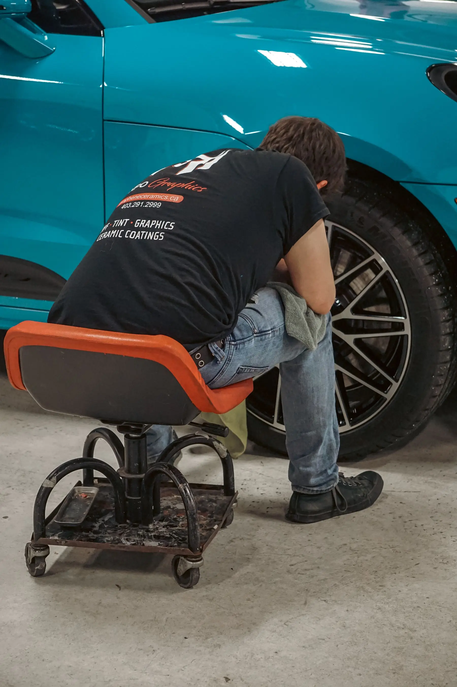

Bent Rim
A visibly bent wheel or impact damage should be inspected before continued driving.

RIM REPAIR · PRECISION / FINISH
Rim Repair begins with inspecting the specific wheel and damage. Some wheels may be repairable while others are better replaced. Send the vehicle, wheel details and preferred shop so Tires 4 Less can confirm the right inspection and repair path.
SIGNS YOU NEED RIM HELP
Rim problems can show up as visible damage, air loss or changes in how the vehicle feels. Inspection should come before assuming the wheel can be repaired.
A visibly bent wheel or impact damage should be inspected before continued driving.
Visible cracking or structural damage needs a repairability assessment.
Scrapes and impacts can be cosmetic, structural or both.
Repeated pressure loss can involve the tire, wheel, bead area or another source.
Corrosion around the bead or wheel surface may affect sealing and appearance.
A change after a pothole or impact is a reason to have the wheel checked.
RIM REPAIR PROCESS
Rim Repair starts with the actual wheel. The process stays centered on inspection and avoids assuming every bent or cracked rim can be saved.
REQUEST AN INSPECTIONLook at the wheel, damage location, tire condition and air-loss symptoms.
Determine whether the wheel appears repairable or should move toward replacement.
Proceed with the appropriate wheel path based on the assessment.
Confirm the completed work and next step before the vehicle returns to service.
WHY THE RIM MATTERS
Rims support the tire, affect sealing and take direct impact from potholes, curbs and road hazards. A damaged wheel can create a tire problem even when the tire itself is not the original cause.
A damaged wheel can contribute to pressure loss at the bead area.
Pothole or curb impacts can deform or damage the wheel.
Wheel damage can show up as vibration or a change after an impact.
Curb and finish damage can affect the look even when the wheel remains usable.
BEFORE / AFTER PROOF
Bent, cracked or damaged wheels need inspection before repairability is confirmed. The shop can recommend repair or replacement after assessing the specific wheel.
WHEN REPLACEMENT MAY MAKE MORE SENSE
Some damage may be too severe or otherwise inappropriate for repair. The correct decision comes from inspecting the specific wheel and vehicle situation.
Damage severity and location matter.
A wheel/tire sealing issue may need a different path.
More than one problem can change the recommendation.
If repair is not appropriate, move to the correct replacement path.
REAL RIM WORK
Bent, cracked or damaged wheels are evaluated individually before repairability is confirmed.
VIEW OUR WORK → RIM DAMAGE / INSPECTION
RIM DAMAGE / INSPECTION
REPAIR / PROCESS DETAILCOMPLETED WHEEL / FINISHRIM REPAIR QUESTIONS
Quick answers about Rim Repair, based on the current Tires 4 Less service and location rules.
No. Repairability depends on the specific wheel, damage location, severity and what the inspection shows.
Some cracked-wheel situations may be repairable while others may need replacement. The specific wheel has to be assessed.
Yes. Wheel or bead-area issues can contribute to pressure loss, so the tire and wheel may both need inspection.
No. Wheel Alignment is a separate service and is currently offered at Freedom Drive only.
Ask the shop for the current Rim Repair warranty terms before service so you know the applicable duration, exclusions and claim process.
BEFORE YOU REPLACE THE WHEEL...
Send the damage details, vehicle and preferred shop. The team can confirm the right inspection path and next step.